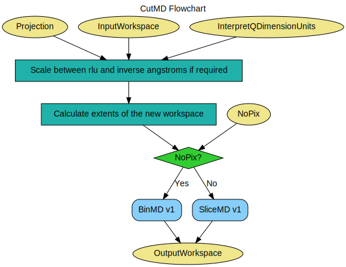

\(\renewcommand\AA{\unicode{x212B}}\)
CutMD v1¶
{kind=link}
CutMD dialog.¶
Summary¶
Slices multidimensional workspaces using input projection information and binning limits.
See Also¶
Properties¶
Name |
Direction |
Type |
Default |
Description |
|---|---|---|---|---|
InputWorkspace |
Input |
IMDWorkspace |
Mandatory |
MDWorkspace to slice |
Projection |
Input |
Projection |
||
P1Bin |
Input |
dbl list |
Projection 1 binning. |
|
P2Bin |
Input |
dbl list |
Projection 2 binning. |
|
P3Bin |
Input |
dbl list |
Projection 3 binning. |
|
P4Bin |
Input |
dbl list |
Projection 4 binning. |
|
P5Bin |
Input |
dbl list |
Projection 5 binning. |
|
OutputWorkspace |
Output |
IMDWorkspace |
Mandatory |
Output cut workspace |
NoPix |
Input |
boolean |
False |
If False creates a full MDEventWorkspaces as output. True to create an MDHistoWorkspace as output. This is DND only in Horace terminology. |
MaxRecursionDepth |
Input |
number |
1 |
Sets the maximum recursion depth to use. Can be used to constrain the workspaces internal structure |
InterpretQDimensionUnits |
Input |
string |
Auto |
How will the Q units of the input workspace be interpreted? This property will disappear in future versions of Mantid Auto : Figure it out based on the label units RLU : Force them to be rlu Q in A^-1 : Force them to be inverse angstroms. Allowed values: [‘Auto’, ‘RLU’, ‘Q in A^-1’] |
Description¶
This algorithm performs slicing of multiDimensional data according to a chosen projection, limits and binning steps.
The syntax is similar to that used by Horace.
Unlike most Mantid algorithms, CutMD can accept a list of workspaces as the input workspace, given as the name of a workspace in the analysis data service or the path to a workspace, or simply a workspace object in python. These will all then be processed sequentially with the same options. The only requirement is that the same number of output workspaces are also given so that CutMD knows what to call each output workspace created.
MDEventWorkspaces¶
For input of type MDEventWorkspace the algorithm uses BinMD v1 or SliceMD v1 to achieve the binning of the data. The choice of child algorithm used for slicing in this case is controlled by the NoPix option.
MDHistoWorkspaces¶
If the input is an MDHistoWorkspace BinMD v1 and SliceMD v1 are not made available as they needto get hold of the original MDEvents associated with an MDEventWorkspace in order to perform the rebinning. As this information is missing from the MDHistoWorkspace images, those operations are forbidden. Instead, a limited subset of the operations are allowed, and are performed via IntegrateMDHistoWorkspace v1. In this case, the Projection and NoPix properties are ignored. See IntegrateMDHistoWorkspace v1 for how the binning parameters are used.
Projection Binning¶
The ‘PnBin’ property, where n is between 1 and 5, is used to specify the binning for the nth dimension of the output workspace. The dimension will be truncated to have extents ‘minimum’ and ‘maximum’, with ‘stepsize’ specifying the size of the bins inbetween. ‘(maximum - minimum)/stepsize’ is rounded down to produce an integer number, greater than or equal to 1, of equally-sized bins between ‘minimum’ and ‘maximum’.
Note that if the output workspace is an MDEventWorkspace (NoPix=False), these properties define the top-level box structure of the workspace. If the MaxRecursionDepth property is set to higher than its default of 1 then if many events fall within a single box it may be split further, see the documentation for MDEventWorkspace.
The PnBin parameters must match one of these three formats:
Format |
|
|---|---|
[minimum, stepsize, maximum] |
The dimension in the output workspace will extend from ‘minimum’ to ‘maximum’ with bins of width ‘stepsize’. |
[minimum, maximum] |
A single bin will be created between ‘minimum’ and ‘maximum’. |
[stepsize] |
The ‘minimum’ and ‘maximum’ are set to the dimension limits; the workspace is not cut in this dimension. |
For ease of use, when using the python interface only, the ‘PBins’ keyword can be used in place of separate PnBins properties. PBins accepts a tuple, or list, of PnBins parameters. The position in the list determines the dimension it corresponds to. See the Usage examples below.
Creating Projections¶
Projections are used by CutMD to transform the multidimensional data prior to cutting it. Projections are provided to CutMD in the form of a TableWorkspace. The format of these workspaces is as follows:
Column |
Type |
Purpose |
|---|---|---|
name |
string |
Specifies the dimension the row controls. Can be ‘u’, ‘v’, or ‘w’. |
value |
V3D |
A 3 dimensional vector specifying the axis for the dimension. Example: [1,-1,0] |
offset |
double |
The offset value to use for this dimension. |
type |
string |
The type/unit of this dimension. ‘r’ is RLU, ‘a’ is inverse angstroms. |
A projection table should have three rows: one for u, one for v, and one for w.
There is a helper class called Projection that can be used to construct these projection tables for you automatically. For example:
from mantid.api import Projection
# Create an identity projection
proj_id = Projection([1,0,0], [0,1,0], [0,0,1])
# Automatically infer third dimension as being orthogonal to the first two
proj_rot = Projection([1,1,0], [1,-1,0])
# Set other properties
proj_prop = Projection()
proj_prop.setOffset(0, 100) # Set u offset to 100
proj_prop.setOffset(1, -5.0) # Set v offset to -5
proj_prop.setType(1, 'r') # Set v type to be RLU
proj_prop.setType(2, 'a') # Set w type to be inverse angstroms
#Create table workspaces from these projections
ws_id = proj_id.createWorkspace() # Named ws_id
proj_rot.createWorkspace(OutputWorkspace="ws_rot") # Name ws_rot
When calling createWorkspace inside of algorithms like CutMD, the OutputWorkspace name must be provided, or createWorkspace will not know what to call the created workspace:
#Good:
CutMD(..., Projection=proj.createWorkspace(OutputWorkspace='proj_ws'), ...)
#Bad:
CutMD(..., Projection=proj.createWorkspace(), ...)
Workflow¶
Usage¶
Example - Contrived example using projections:
from mantid.api import Projection
to_cut = CreateMDWorkspace(Dimensions=4, Extents=[-1,1,-1,1,-1,1,-10,10], Names="H,K,L,E", Units="U,U,U,V")
# Add two fake peaks so that we can see the effect of the basis transformation
FakeMDEventData(InputWorkspace='to_cut', PeakParams=[10000,-0.5,0,0,0,0.1])
FakeMDEventData(InputWorkspace='to_cut', PeakParams=[10000,0.5,0,0,0,0.1])
SetUB(Workspace=to_cut, a=1, b=1, c=1, alpha=90, beta=90, gamma=90)
SetSpecialCoordinates(InputWorkspace=to_cut, SpecialCoordinates='HKL')
#Since we only specify u and v, w is automatically calculated to be the cross product of u and v
projection = Projection([1,1,0], [-1,1,0])
proj_ws = projection.createWorkspace()
# Apply the cut (PBins property sets the P1Bin, P2Bin, etc. properties for you)
out_md = CutMD(to_cut, Projection=proj_ws, PBins=([0.1], [0.1], [0.1], [-5,5]), NoPix=True)
#Another way we can call CutMD:
#[out1, out2, out3] = CutMD([to_cut, "some_other_file.nxs", "some_workspace_name"], ...)
print('number of dimensions {}'.format(out_md.getNumDims()))
print('number of dimensions not integrated {}'.format(len(out_md.getNonIntegratedDimensions())))
dim_dE = out_md.getDimension(3)
print('min dE {}'.format(dim_dE.getMaximum()))
print('max dE {}'.format(dim_dE.getMinimum()))
Output:
number of dimensions 4
number of dimensions not integrated 3
min dE 5.0
max dE -5.0
Example - CutMD on MDHistoWorkspace:
signal = [1.0] * 100;
error=[1.0] * 100;
# Create Histo workspace
histo_ws=CreateMDHistoWorkspace(Dimensionality=2,Extents=[-10,10,-10,10],SignalInput=signal ,ErrorInput=error, NumberOfBins=[10,10], Names='X,Y', Units='Q,Q')
# Cut the MDHistoWorkspace to give a single bin containing half the data
cut= CutMD(InputWorkspace=histo_ws, PBins=[[-10, 10], [-5, 5]])
print('Total signal in input = {}'.format(sum(signal)))
print('Half the volume should give half the signal = {}'.format(cut.getSignalArray()[0][0]))
Output:
Total signal in input = 100.0
Half the volume should give half the signal = 50.0
Categories: AlgorithmIndex | MDAlgorithms\Slicing
Source¶
C++ header: CutMD.h
C++ source: CutMD.cpp